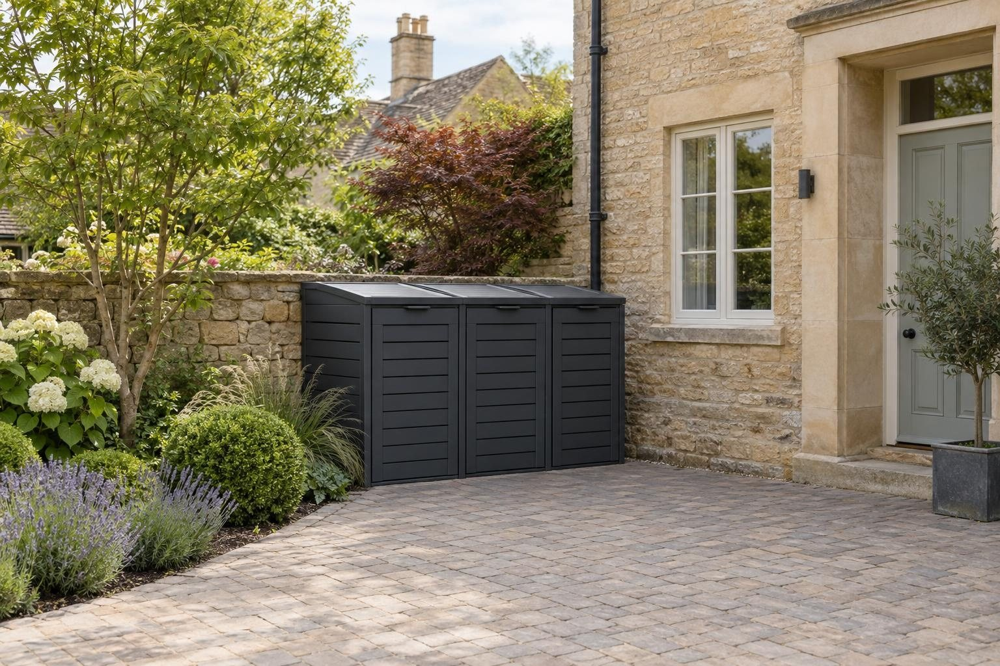

Bin stores in Cottesmore
Bin stores for Cottesmore family homes, often planned alongside a wider drive so cars and bins each have their own space.
In Cottesmore, a single wheelie bin store fitted on a level paved base starts from about £1,000 as a guide. Two and three bin stores, and any new path to the kerb, are priced on the visit. The main local consideration is space on the frontage: family homes here often want a wider drive, so the store needs a spot that does not cost a parking space.
- Single bin store, fitted
- From £1,000
- Planning
- Usually not at the side or back
- Ground
- Mixed limestone and clay
- Guarantee
- 5 years, in writing
Our 2026 guide prices, all in. Your fixed price comes in writing after the site visit. Council fees checked October 2026.
Bin stores in Cottesmore
Cottesmore is a large village north east of Oakham, and a lot of its later housing is home to families with two cars and a full set of bins. When the drive gets widened, the bins often lose the corner they used to sit in and end up blocking a car door. We fit composite slatted stores with aluminium doors for one, two or three bins, on a level paved pad, positioned so parking and bins each have their own place.
If you are planning a wider drive, it is worth thinking about the bin store at the same time, so the pad and path are built in one go. If the drive is staying as it is, we find the most practical spot nearby, out of the way of car doors and the front path. We measure your bins, check every lid opens fully and give you a guide price on the visit, with a fixed price in writing afterwards.
What makes Cottesmore different
Cottesmore sits on mixed ground on the edge of the limestone, and drainage varies from plot to plot. One garden may take water away quickly while the next holds it. For a bin pad, that means we dig a test hole rather than assume, then build the base and fall to suit. The North Brook rises nearby and runs through the village towards Empingham, so plots close to its course get extra care over where the run-off goes.
On one of Cottesmore's later family homes, a typical job is a two or three bin store to one side of a widened drive, on its own paved pad with a clear line to the kerb. On the ironstone and limestone cottages in the old centre, it is more often a compact store at the side or rear.
Sources: Rutland conservation areas · Rutland flood risk strategy.
Permissions in Cottesmore
- PlanningA bin store at the side or back of the house is normally permitted development. In front of the house, a free-standing store technically falls outside householder permitted development, so we check with the council before building one there. Listed buildings and the Cottesmore conservation area have tighter rules, so we check your address before anything is designed. Planning Portal: outbuildings
- Design and priceWe measure up, check the ground and the planning position, and give you one fixed written price.
Rules checked October 2026.
What you get in Cottesmore
- Store position planned so it does not cost a parking space
- Test hole dug on Cottesmore's mixed ground before the base is set
- Pad and path built alongside a drive widening where that suits
- Planning checked with Rutland County Council for front stores
- Composite slatted stores with aluminium doors that never need painting
- Built on a level paved pad, not on soil or gravel
- Lids and doors that open fully with the bins inside
The specification
- Area dug and levelled
- Sub-base and paved pad laid level
- Store assembled and fixed down
- Doors and lids adjusted
- Path to the kerb made good
- Five year workmanship guarantee in writing

“Really pleased with my new driveway. Beautifully finished, friendly professional workmen, would definitely recommend and will be using them again for the garden once other renovations complete.”
Driveway — Google review
“Absolutely great guys, job was done in good time and looks brilliant. No complaints, the driveway is immaculate. More work in the near future, thanks again!”
Driveway — Google review
Everything else we do here


Bin stores in Cottesmore: questions
How much does a bin store cost in Cottesmore?
Do I need planning permission for a bin store in Cottesmore?
Should we fit the bin store at the same time as widening the drive?
Our neighbour's garden drains well but ours does not. Why?
Bin stores nearby
Request a site visit in Cottesmore
We measure up, check levels and drainage, and send a written proposal with the build-up, the programme and one whole price. No pressure and no follow-up sales calls.